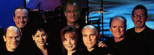

The cast of "The Lost World"

Click on a face for a profile
Actor-director Leonard Nimoy, actor-teacher John de Lancie and writer-producer Nat Segaloff formed Alien Voices in 1996 to create multi-media works of science fiction and fantasy. The initial enterprise that Nimoy, de Lancie and Segaloff chose was state-of-the-art audio plays.
The first three Alien Voices titles were published in the spring of 1997 by industry leader Simon & Schuster Audio: H.G. Wells' "The Time Machine," Jules Verne's "Journey to the Center of the Earth," and Sir Arthur Conan Doyle's "The Lost World." All are fully dramatized adaptations with stereophonic soundscape by Jeff Howell and original music by Peter Erskine.
The casts have included actors and actresses who have appeared in various "Star Trek" television and feature film series. Incidentally, this marks the first time that actors and actresses drawn from all Star Trek "generations" have performed together in single productions. Nimoy and de Lancie headline each drama.
| Susan Bay | Jerry Hardin | Andrew Robinson |
| Roxann Dawson | Marnie Mosiman | Dwight Schultz |
| Richard Doyle | Kate Mulgrew | Armin Shimerman |
| Robert Ellenstein | Ethan Phillips | Nana Visitor |
| Francis Bay | Click an actor's name to read a profile | |